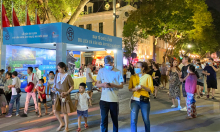
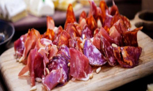
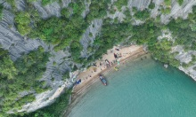

9 trải nghiệm ở Sa Pa được người nước ngoài gợi ý
Tyler Wildeck, phóng viên người Canada, gợi ý du khách nên ghé Trạm Tôn, ngắm cảnh trên đỉnh Fansipan, đi chợ địa phương...
Với tầm nhìn xuống những thung lũng sâu, đèo Ô Quy Hồ (cổng trời Trạm Tôn) là địa điểm được gợi ý cho khách Tây muốn đi phượt. Tại đây có nhiều điểm ngắm cảnh, nổi tiếng là cầu kính Rồng Mây hay cổng trời Sa Pa. Đèo Ô Quy Hồ dài gần 50 km, nằm trên quốc lộ 4D, bắt đầu từ Sapa với một phần ba nằm phía Lào Cai, hai phần ba còn lại thuộc đất Lai Châu, kết thúc tại ngã ba Tam Đường. Đèo còn có tên Hoàng Liên Sơn vì chạy vượt qua dãy Hoàng Liên; hay đèo Mây vì quanh năm mây mù che phủ, ngay cả mùa hè. Ảnh: @travellingwithsmile/Instagram
Leo đỉnh Fansipan - nóc nhà Đông Dương, là trải nghiệm nên thử của các du khách mê chinh phục. Thời điểm đẹp nhất là từ tháng 2 đến tháng 4 khi hoa đỗ quyên nở rộ. The Travel cho rằng, lang thang dọc theo những con đường mòn, du khách có thể nhìn ngắm các sườn núi, biển mây, núi rừng điểm xuyết hoa đỗ quyên..
Hệ thống cáp treo lên đỉnh Fansipan ở Sa Pa giữ kỷ lục thế giới về độ chênh giữa ga đi - ga đến (1.410 m). Mỗi cabin có sức chứa 30-25 khách, cửa sổ kính lớn giúp du khách dễ dàng ngắm cảnh, quay phim, chụp ảnh. Đây là trải nghiệm đơn giản hơn cho những người không thể tự leo lên đỉnh Fansipan
Nguồn: https://vnexpress.net/
-

Tăng tàu đến các điểm du lịch
Từ tháng 5, ngành đường sắt tổ chức chạy thêm nhiều tàu Hà Nội - Đồng Hới, TP HCM - Đà Nẵng/Nha Trang phục vụ khách du lịch.
-

Điểm mới tại Lễ hội Du lịch Hà Nội 2022
Gian hàng triển lãm online lần đầu tiên xuất hiện tại lễ hội trên nền tảng 2D, gồm các hoạt động tổ chức sự kiện, hội thảo, quảng bá, thương mại hóa… -

Casa Espana - điểm thưởng thức ẩm thực Tây Ban Nha tại Hà Nội
Casa Espana là một trong những nhà hàng gây ấn tượng thực khách tại Hà Nội nhờ có kiến trúc cổ điển và các món ăn truyền thống Tây Ban Nha. -
9 trải nghiệm ở Sa Pa được người nước ngoài gợi ý
Với tầm nhìn xuống những thung lũng sâu, đèo Ô Quy Hồ (cổng trời Trạm Tôn) là địa điểm được gợi ý cho khách Tây muốn đi phượt. -

Hòn Béo Cò hoang sơ giữa vịnh Bái Tử Long
Hòn Béo Cò là một trong khoảng 600 hòn đảo thuộc huyện đảo Vân Đồn, cảnh quan kỳ vĩ với vách đá dựng đứng và một bãi cát đẹp, xung quanh là hệ thống bè nổi nuôi hàu của ngư dân. Chu Đức Việt, sinh năm 1987, đến từ Hà Nội, vừa có chuyến du lịch đáng nhớ trên hòn đảo nhỏ giữa vịnh Bái Tử Long. -
Cẩm nang du lịch Phú Thọ
Phú Thọ cách Hà Nội khoảng 90 km về phía tây bắc. Nhắc đến nơi đây, du khách thường nghĩ ngay tới Lễ hội Đền Hùng, hành hương về với cội nguồn hay rừng cọ, đồi chè bạt ngàn. -

Du lịch Đà Nẵng vui quên lối về trọn bộ cẩm nang A-Z
Nhắc đến Đà Nẵng nhiều người sẽ thường nghĩ ngay đến “thành phố đáng sống nhất Việt Nam” nhờ cảnh sắc, khí hậu ôn hòa, rất thích hợp để nghỉ dưỡng.